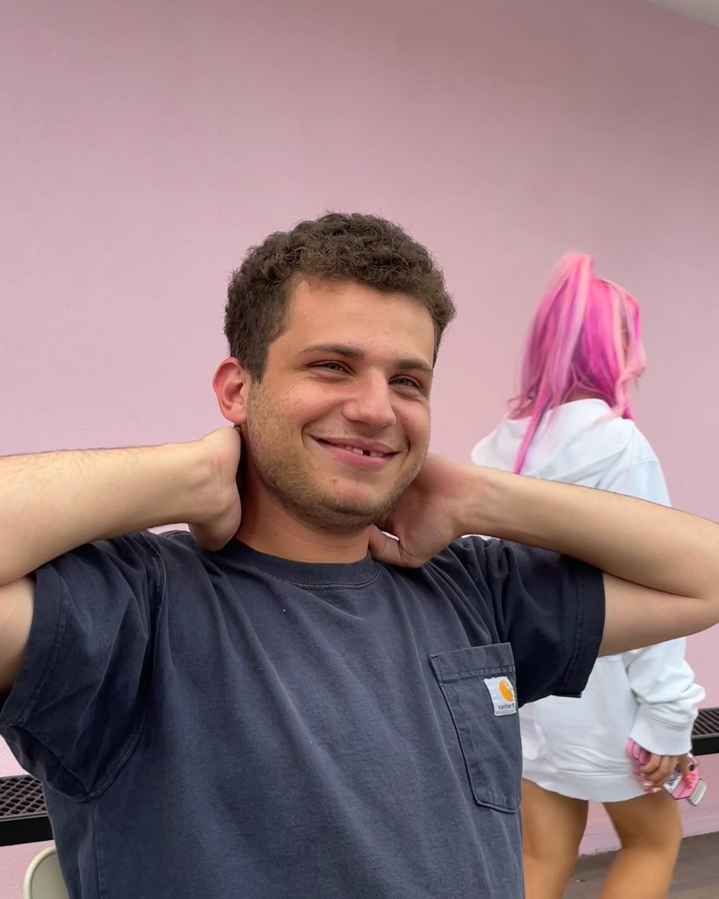
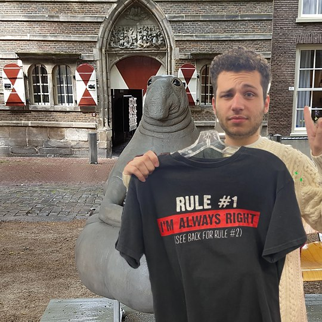
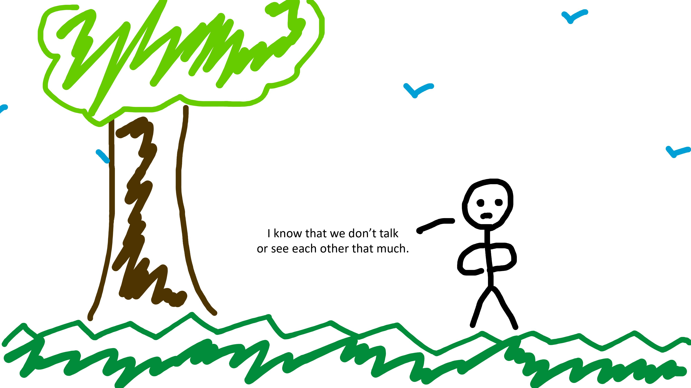
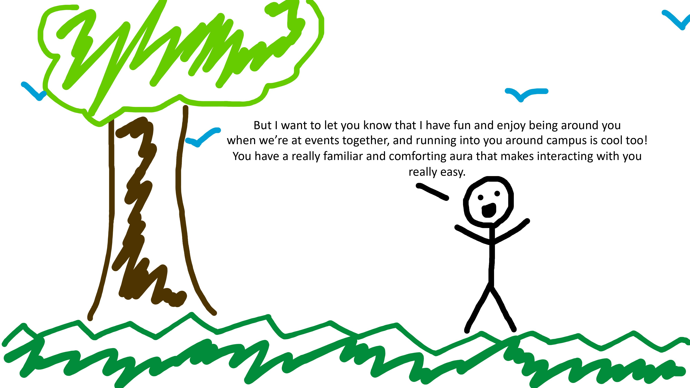
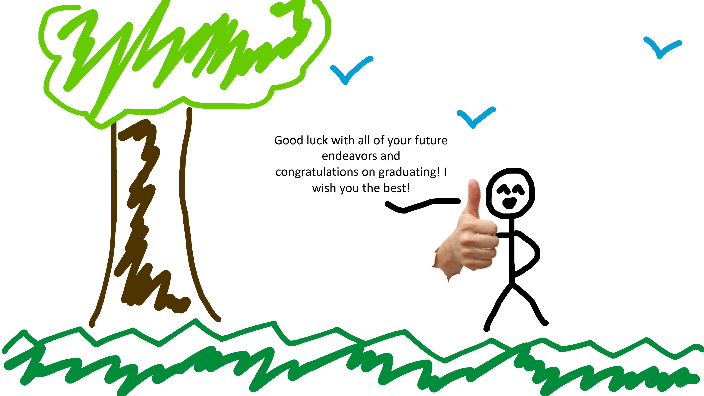
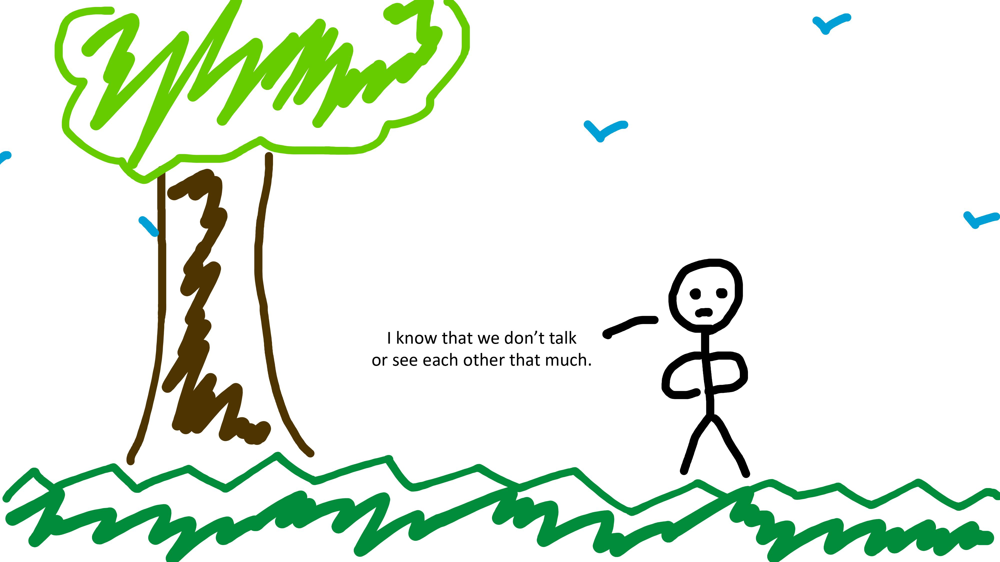
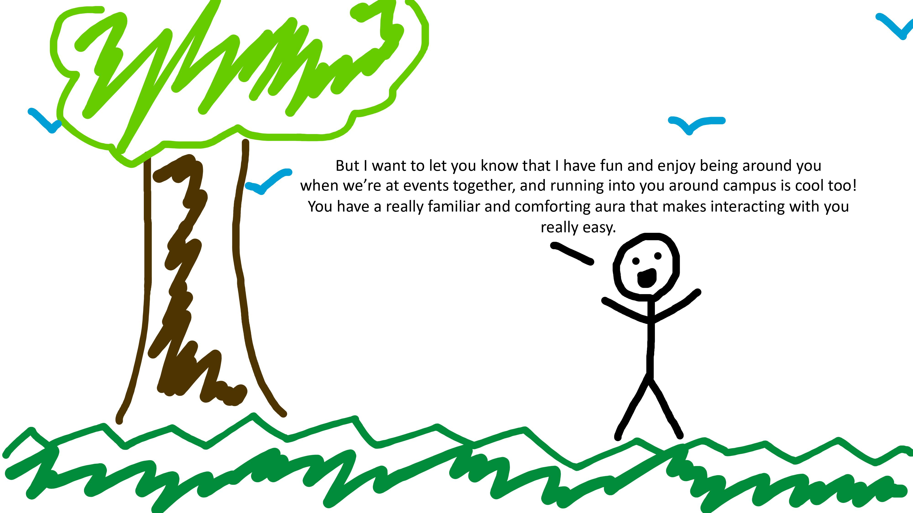
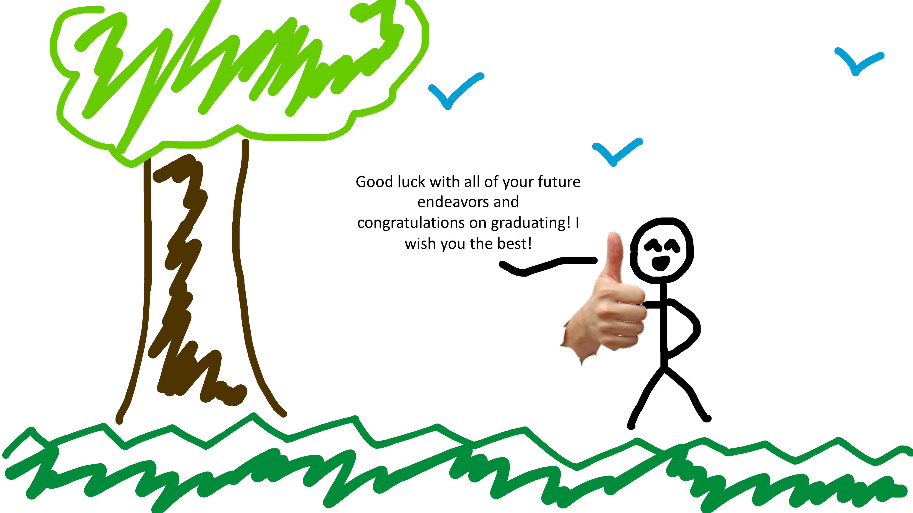
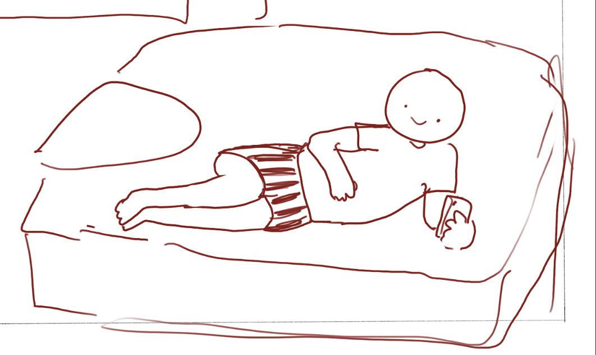

LETTERS
To Ami & Omar
13 May 2023

13 May 2023
They still talk about you at the cafe sometimes,
his friend, Kyle Voong, told him over text in November. You’re an icon.
He comes across as an extrovert, but I’ve always seen him as otherwise. He is certainly loud at times, and he seems to feed off the energies of other people; but the silences in between tend to be louder, and he seems to treat them as sacred. I remember the one thing that consistently turned him off, as he told me back when he had the time and energy to (try to) date women, was when they had far too much energy. In some ways I found it cathartic, to see someone who used to drain all of my energy finally feel what it was like to be drained.
The details of how I first met Amitai are hazy. It was August of last year; I had just moved in to start my freshman year at U.S.C., despite classes being mostly remote (in-person instruction wouldn’t start until the next term), and the only people I at least sort of knew were my roommates, a few people I’d met at orientation, and a rowdy bunch of upperclassmen I’d met by chance on a Discord server.
Two nights before the first day of classes, the university hosted a huge party spanning the two lawns at the U.S.C. Village, the rest of it jam-packed with hundreds of people in hours-long lines and even more freshmen wandering around confused. Some of us on the Discord server had arranged to meet amidst the chaos. I had no idea what anyone looked like, but somehow I made my way to the spot and Amitai noticed me immediately. The only thing I remember from that night, regrettably, is him shouting, JON TWENTY-FIVE FROM USCORD???
at the top of his lungs. In that instant I considered turning back and running away; but I’m glad I stayed.

It’s become a bit of a running joke that we’ve run out of things to say, since we hang out so often, and neither of us really feel like starting the conversation; we’ll break the silence scrolling through TikToks with the most insufferable icebreaker questions like, What’s your major?
or So you come here often?,
punctuated with his signature hearty laugh. (Nowadays, it’s evolved into a shorthand of just saying “So, uh...” and letting the silence do the rest of the work.) There was never a man alive on this earth for whom the word guffaw
could not be more appropriate; and it has a certain rasp to it that makes it all the more contagious.
Amitai, I can’t possibly put into words how much you mean to me. Your company, your advice, your Larry David-esque standup routines, our circular conversations, our collaborative Spotify playlists, our harpings about women ☕ and Shohei Ohtani, our awkward handshakes, our car rides, our trips to everywhere and nowhere — all have been my lifeblood in my two years here at USC. It is you who showed me the best places around town and shaped my perception of L.A., the city of angels: Griffith Observatory, Colorado Street Bridge, Little Tokyo, the H, Menya Tigre, millet crepe, CoCo ICHIBANYA. I will always remember the nights we went to see the L.A. Philharmonic, and beabadoobee, and 100gecs, and the other nights when we got McDonald's and drove around town listening to Sparks
by Coldplay.
I can’t imagine USC without you. I’m not sure what I’ll even do when you graduate, but I know we can figure something out.
I love you, Amitai. Thank you for being my friend. ■

A couple years ago now, I told Omar that he was a role model for healthy masculinity. I forget the exact context, and how he even responded to that, but to this day I still hold that to be true. He is confident but unafraid to let himself go. He is strong but unexpectedly tender, when he needs to be. In a way, I have always aspired to be Omar; I am, in part, the man I am today because of him, and even as he leaves, I hope I can follow the example that he has set.
Forever seared into my memory is this one night, in the beginning of May: Amitai and I were eating dinner at their apartment, and Omar trudged into the living room with an inscrutable glaze over his eyes.
Guys,
he said, in his usual monotone. I am a celebrity in Kyrgyzstan.
He could only explain himself after we laughed for three minutes straight. Someone — probably an overenthusiastic family member — had caught wind of the game he was making, inspired by, and named after, the Kyrgyz legend Manas. Leaked video of the game made it to Kyrgyz local news, and his family started sending him screenshots of social media posts calling him the son of Kyrgyzstan
and a hero comparable to Alexander the Macedonian.
Ami and I could only stare at him in disbelief. He stared back, equally confused.

Then, of course, we did the only logical thing friends could do: embrace it wholesale. Our groupchat name proudly bears the Kyrgyz flag, and my contact for Omar is omar uraimov, son of kyrgyzstan.
Omar, I truly believe you are destined for great things. I can only await the day you will appear on the news here in the U.S., too, as anchors and pundits praise your myriad accomplishments. You will certainly hate it, but I believe it is only what you deserve: the best.
Goodbye, Omar. Thanks for being my friend. See you around. ■

Manas,
too, Omar! It honestly feels like it’s been ages since we first met in the Century living room, where we all stood around awkwardly since we didn’t know each other yet; and now I get to celebrate with you on completing college! One of my very first memories of you was when we ditched the Discord group to grab HoneyBird for dinner with Gloria. I still remember learning about your major and how you were really interested in themed entertainment. It was the first glimpse I had of your passion towards your work and interests and it’s something I look up to you for. From all our Century talks to hanging out for board game nights, I’m really glad to have you as a friend and I know you’ll do incredible things once you leave USC. Can’t wait to see what’ll happen in the next chapter of your life! (P.S. Learn how to drive so we can go places next year pls <3) ■


Dear Amitai,

And outside of just the Marshall world, all the adventures you initiated and took So True on were so much fun. You brought me out of my comfort zone when I would have otherwise decided to rot at home, and I cannot thank you enough for that. Looking through my camera roll, I’m starting to feel nostalgic. The Ditto dance at UCLA, our unintentionally matching Converse shoes, the epic chess match at Din Tai Fung, the mini-fight during Jeopardy >:(, the scenic walks at the Arboretum, the silly photos in San Diego — my life would feel incredibly empty without your friendship and the warmth you bring that infects us all.
I know a lot of our friendship has been formed on the basis of roasting each other, but I think what I admire most about you is how you always try to be a good person. You’re there for people when they need you. You help people, even if they don’t ask for it. You bring people out of their shells and make them smile. This is going to sound cheesy, but I’m so grateful to have a friend like you. And I’m so proud of your growth and the things you’ve achieved that surely did not come easily. I look forward to our board game cafe enterprise with Omar and you (I will bring the cat) and for our KPMG x EYP happy hours. You best believe I will teams message you through my workday once I start full-time.
Best, Audrey ■

Hello Omar Son of Kyrgyzstan,
Outside of all that, you make board game nights board game nights. I remember Gloria talking about how in her class, someone proposed that there should be a government subsidy for all game explainers. You, sir, deserve a government subsidy for introducing us to all these amazing games and explaining them so well and keeping these game nights alive that have been some of my happiest moments at USC. Even if you’ll defeat us at Jeopardy and Murder Trivia Party until the end of time, it’s an honor to be able to play with a Quizbowl champion.
Til next time, Audrey ■

Ami,
I have to say I’m a little sad. When you leave, there will be no one on campus to chant the lyrics of Jewish hymns with me, appreciate abstract memes, or butcher the lyrics to Dramaturgy. No matter the venue — San Diego, Hollywood Bowl, 1234 W 37th Pl — hanging out with you was always an adventure, and these adventures I will miss.
Thank you for being part of my own college journey. I can’t wait to see the things you achieve, the places you go, and the people you meet. Take the world by storm.
One day I will beat you in Smash Ultimate >:)
Nick ■

Omar,
Manas
! It seems like forever since we were hanging out at Century, with the smiley face and the stuffed uterus. I always appreciated your goofiness, and it was always extremely fun to hang out and play board games with you. I don’t know when or how our tradition of just staring and pointing at each other on campus started, but it’s one of those little parts of the USC experience that I will miss when you graduate.
I will also miss our rare but deep conversations on the meaning of leadership. Your creative drive, steadfast vision, and your fine-tuned control over your projects was extremely inspirational to me, especially when I was struggling to rein in my club-that-must-not-be-named. Moreover, you were always positive and introspective, despite your massive workload. During parts of the school year that seemed to just drag on, your positive energy and love of life was infectious. I know you will continue to cherish it, just as we have.
Thank you for being a part of my own college story. You undoubtedly have a bright future, and that definitely goes without saying. I can’t wait to play video games in the future and see on the screen, Produced by Omar Uraimov. Let’s still eat Kyrgyz food sometime too :)
Nick ■
For My Sweet Prince,
Sincerely, Kyle Voong ■
 





■


It’s really fun talking to you. We have such a broad range of conversations and all of them make me very happy. Like music, anime, cats, lala land, chess, and so much more. I appreciate you and all our interactions very much, you inspire me to take life a little less seriously and just enjoy every moment.
Thank you for being a wonderful friend. I am sure you will be amazing at all the things you do. Good luck with your future endeavors! Take lots of strolls, pet lots of cats, and eat some vegetables for fuck’s sake. Oh and tell us when you are not busy so we can infiltrate your room some more.
Best, mel ■

Hello Omar,
I know we didn’t talk that much, but in the short bit that I did talk to you and spend time with you it was fun. I feel like we would have gotten along pretty well since you know a lot about video games and basketball. While I definitely don’t think I love basketball as much, I do think I love video games as much as you do. Maybe we can talk about it sometime.
One day I’ll see your name somewhere on a triple-A title, and I’ll be able to say “I know that guy”. I wonder if that’s what you are hoping to do in the future, or if you’d rather do something else. Regardless, I think the career that you chose is amazing, and I hope that you have a ton of fun doing it. A lot of kids grow up wanting to design video games, so the fact that you put in the effort to actually go out and do it is amazing.
So keep making games. I know that you’ll do your best when you make them. Even if some dickheads rag on your game, as long as you put your heart into it, it will have been worth it. (I know how shitty gam*rs can be in their reviews. Don’t let them get you down)
Sincerely,
Shawn ■

Hello Amitai,
I think there’s a lot I want to say to you but I’m going to have a hard time getting the words onto paper, so it might come out as a lot of word vomit. Or maybe I won’t be able to put it down on paper at all. We’ll see.
The first conversation we had together was, I believe, about music. I can’t remember exactly what musician it was but I was just happy to have somebody to talk to. I think it might’ve been Panchiko. I didn’t really think that I’d become such good friends with somebody who I only knew by a small icon on a computer screen.
I very much cherish the time that we spent together in college. It’s weird, because when we’re together I still feel like a freshman and you still feel like a sophomore. And it’s all the more strange when I realize that we are much older and we’ve exchanged being dumbass teenagers for dumbass adults.
We can talk about clothes, music, basketball, memories, food. Anything, really. We talk about literally anything with one another, and bitch and complain about anything, too. I think we both get along so well because we grew up on the internet. I wouldn’t have it any other way. I just like hanging out with you. Sitting in your car and going to do whatever - thrifting, getting food, just walking around campus, watching anime.
I’m sad you're graduating, and it’s something I think about a lot. I suppose that’s normal. I wish I hung out with you more. I guess there’s always time in the future, but it’s different when you start working, and it’ll be different after I start working, too.
I’m proud of you, and I wish you the best.
Sincerely,
Shawn ■


Hello Ami!
Your schlawg-in-arms, Eddie ■

To the son of Kyrgyzstan,
P.S. If I end up being a GI doctor, your first 3 appointments are on the house.
With love from your fellow Houstonian, Eddie ■


You’ve been a true friend and I know I’ll live the rest of my life remembering your kindness and laughter. You truly have a heart of gold (first coined by Omar but I 1000% agree!) and deserve only the best. Your emotional maturity and goofiness combination is actually really refreshing and I hope you continue to stay true to yourself.
I always have a great time vibing with you about our shared (trauma? lovely experiences?) being Love Live and MLP fans. (Though I’m still not sure what kind of image you have in your head of me because i’M NOT AS DEGEN AS YOU THINK!!! WTF) It’s actually kind of scary how much your habits have changed my own, though. I actually check and respond to my Instagram DMs thanks to you, I’ve started saying HOLY MOOOOLY, I started dapping people up after learning from you, the list goes on. Thank you for sending me funny Chinese reels :] I am honored to be Amitok Crush #16 or whatever I am.

And AHHH the memories!! I’m going to miss trying to scare you every time you played Roblox in your room, and your immaculate car playlist taste (I won’t miss the distracted driving though!!!!!! jkjk) Thank you for taking us on such memorable adventures over these past two years. I’m so glad that so many of the memories I’ve made of LA have been with you, whether it is the Huntington, the Arboretum, Sawtelle, the Santa Anita Mall, Santa Monica, and even San Diego! And that Super Bowl party was so iconic. Thank you for commissioning me and being my first actual (!!) client. It honestly meant so much :D
Ami, you are so genuine and I’m so thankful for your friendship. I’m so glad we met on Discord and I hope to see you often next spring, though preferably you will not be in your underwear like that one time I walked by your room and you were seal posing. I’m gonna miss you a lot next year but I know you will absolutely slay at everything you do in the future! Thanks for spending these years with our humble friend group.
And never stop seal posing!
Sincerely,
Gloria ! ■
Hi Omie (sailorwow),

(These are not our best photos but I thought they matched and were really cute 🥺 The Fall 2021 memories are so core & so strong!)

I cannot believe you are finally graduating! It’s going to be so strange coming back to a USC without Omar Uraimov THE Son of Kyrgyzstan, friend to Joe the Smiley Face, Resident of 1234, Master of the Board Games, Ultimate Manager/Commissioner of Omarball, THE Face of USC Dragon Boat, Owner of the Square “Mini” PC, Tyrant of Trivia Murder Party, Mortal Enemy of All Pigeonkind, Wielder of Smash Villager, Annihilator of Lactaid, Despiser of Rage Cage, King of Towel Blankets, Lover of Fried Chicken, and Boy Born Once Upon a Time in a Faraway Land. It won’t be the same, but I am so glad you will be around to visit me.
I still remember our initial meeting like it was yesterday. Walking around the walls of Century to see you in the courtyard, walking around (lost af LOL), visiting you when you realized you were allergic to crab, and then ditching the Village Catan players to eat Honeybird with Queenie… I’m so glad we were able to make such amazing memories. Our trips to Monterey, Santa Barbara, Solvang… All of these times were so precious to me and I can’t believe I was so lucky to have found you. Time has flown by so quickly and it was such an honor to share this chapter of my life with someone as amazing as you.

And how you’ve grown! From watching you become such a dragon boat ICON team daddy, to (maybe?) warming up to ideas of cats, to becoming a bird ID master, to watching the growth of Manas from a little idea to the massive (un)REAL project that is today, I can’t believe how strong you are. So #Leo and #GoldDragon of you, but also how very Omar of you. You are an absolute trailblazer and I admire you SO MUCH. You are so, so genuine and your heart is so big. You put your 1000% into everything you do, and that’s why I know with absolute certainty that you will achieve anything and everything you want, and so much more. One day I’m sure there will be a studio with your name on it. And I’m eagerly awaiting the Omi (Omar x Ami) epic board game café collaboration that will outshine even The Dragon and The Meeple. There’s so much more I want to write but this is in a shared folder and i’M SHY 👉👈 Thank you for bringing such joy and love to my time at USC.
Omar, I will always treasure the moments we’ve shared over the past two years. Meeting you and all of your talent and your silliness has been one of the best things that has happened– for that, I am eternally grateful for sharing this piece of your life with me.
Congrats on graduating. <3
Yours, Gloria ■